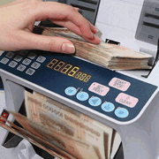

<div id="page" class="noflag">
  <div class="pagewrapper" style="min-height: 911px; /*background: url(/images/kk.jpg); background-size: 100% 100%; */">
    <div id="kurumsal">
      <div class="imagetext">
        
        <div class="text">
          <p class="title">
            1993'den bu güne, ilk günkü heyacanla...
          </p>
          <p>
            Döviz sektöründeki faaliyetlerimize 1993 yılında başlayıp, daha sonra sektörün hızla büyüyen markası haline
            geldik.

          </p>
          <p>
            30 yılı aşkın serüvenimizin bugün gelmiş olduğu noktada hızla büyüyen şirketimiz, ilkelerinden taviz
            vermeyerek, her alanda tam bir iş disiplini ile çalışarak, kurumsal yapısı itibarı ile profesyonel iş
            anlayışını geliştirmeye devam etmekte, gerek döviz gerekse kuyumculuk alanında yatırımlarını sürdürmeye
            devam etmektedir.
          </p>
        </div>
      </div>
      <div class="imagetext">
        
        <div class="text">
          <p class="title">
            Sarrafiye ve Döviz Hizmetleri
          </p>
          <p>
            Her alanda mükemmel bir hizmet şirketi olma prensibiyle yola çıkan şirketimiz, geliştirdiği iş disiplini,
            mesleki etik ilkelerine bağlılığı ve sürekli kendisini geliştiren bir yapıya kavuşmuştur.
            Perakende alanında birçok yeniliğe imza atan şirketimiz, örnek teşkil eden yapısıyla da sektörün
            öncülerinden biri olmakla beraber müşterilerinin güvenini de kazanmıştır.
            Bu istikrarlı büyüme ile birlikte şirketimiz, döviz sektörüne de yatırım yaparak 1993 yılında Ataşehir' de
            Hakan Altın Döviz A.Ş' yi kurmuştur.
            Yüksek miktarda işlem hacmi ile yine kendi alanında sektörün en tanınmış ve en itibarlı kuruluşları arasında
            üst sıralarda yer almıştır.
          </p>
        </div>
      </div>
      <div class="imagetext">
        
        <div class="text">
          <p class="title">
            Yetkili Müessese
          </p>
          <p>
            Hakan Döviz Yetkili Müessese A.Ş. olarak T.C. Hazine ve Maliye Bakanlığı 'nca tahsis edilen döviz alım-satım
            yetkilerimiz doğrultusunda döviz işlemlerinizi nakit veya banka transferi aracılığı ile
            gerçekleştirebiliyoruz.
          </p>
        </div>
      </div>
      <div class="imagetext">
        
        <div class="text">
          <h1>Misyonumuz</h1>
          <ul class="ourmission">
            <li>Müşterilerimizin her türlü döviz alım ve satım işlemlerine özel kur opsiyonları uygulayarak yapmış
              oldukları tüm işlemlerde kazançlı avantajlar sunmak.</li>
            <li>Tüm kurumsal veya bireysel müşterilerimize talepleri doğrultusunda ister bankalar aracılığı ile (havale
              - eft ), ister özel güvenlikli kuryelerimiz ile hızlı ve güvenilir nakit transfer hizmeti sunmak.</li>
            <li>İstikrarlı stratejiler ile belirlenen hedefleri kaliteli, güvenilir ve samimi bir şekilde
              gerçekleştirmek.</li>
            <li>İşlem hacmi ve müşteri portföyünü müşteri memnuniyeti çerçevesinde en iyi şekilde ilerletmek ve
              genişletmek. </li>
          </ul>
        </div>
      </div>
      <div class="imagetext">
        
        <div class="text">
          <h1>Vizyonumuz</h1>
          <p>
            Hakan Döviz olarak, hızla gelişen dijital dünyaya adapte olmanın kritik öneminin farkındayız.
            Operasyon departmanımızın hatasız ve en hızlı şekilde işleyebilmesi için gerekli teknik altyapılarımızı
            sürekli olarak güncelliyoruz.
            Müşterilerimize her daim en üst düzeyde hizmet sağlayabilmek için en yeni teknolojileri sistemlerimize
            entegre ederek yoğun iş temposunda
            döviz alış ve satış işlemlerinizi mümkün olan en kısa sürede ve en etkili şekilde gerçekleştirebilmenizi
            sağlamak en önemli vizyonumuz haline gelmiştir.
          </p>
          <p>
            Bununla birlikte, müşterilerimizle anlık piyasa fiyatlarını (canlı veri) paylaşmak için güncel internet
            teknolojilerini kullanarak iletişim ve erişim kalitesini en yüksek seviyede tutmak da bir diğer önemli
            vizyonumuzdur.
            Gerek web sitemiz üzerinden gerekse mobil uygulamalarımız aracılığı ile cep telefonu, tablet ve
            bilgisayarlar üzerinden özenle tasarlanmış arayüzler ile siz değerli müşterilerimize ulaşıyoruz.
          </p>
        </div>
      </div>
    </div>
  </div>
</div>
